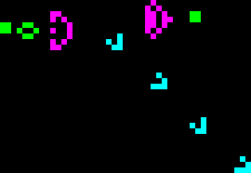
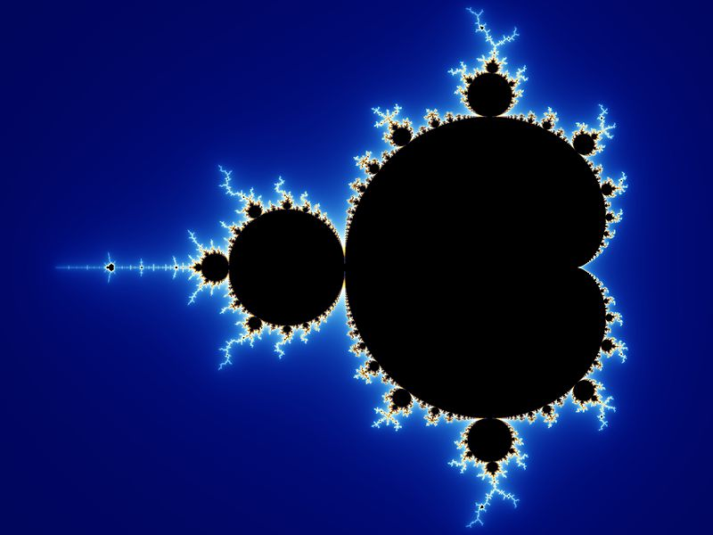

01 / CELLULAR AUTOMATAPATTERNS · EMERGENCE · LOGIC
Conway's Game of Life
Build living patterns and watch them evolve. Discover how four simple rules can create surprisingly complex behavior.
Launch simulationFrom living patterns to infinite fractals, discover how simple mathematical ideas create astonishing visual worlds.

Two fascinating mathematical worlds, ready to explore at your own pace.

01 / CELLULAR AUTOMATABuild living patterns and watch them evolve. Discover how four simple rules can create surprisingly complex behavior.
Launch simulationZoom into the boundaries of infinity. Explore an endlessly detailed universe created by a remarkably simple equation.
Explore the fractalThis teaching project grew out of a Geometry for Art course at Maharishi University of Management. It invites students to observe, question, and create through mathematical exploration.
Start experimenting